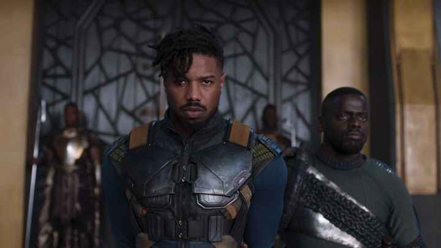

Michael B. Jordan sebagai Erik Killmonger, Killmonger adalah salah satu tokoh fiksi yang ada pada komik Marvel. Tokoh yang dikenal sebagai antagonis ini pertama kali muncul di komik Jungle Action #6 yang diterbitkan bulan Maret 1973 oleh Marvel. Erik Killmonger diciptakan oleh seniman Don McGregor dan Rich Buckler. Debut pertama tokoh ini di MCU adalah di film Blackpather (2018).
Siapa Erik Killmonger? Pada komiknya, Erik adalah penduduk asli Wakanda. Ia memiliki nama asli N'Jadaka. Awalnya hidup N'Jadaka di Wakanda sangat damai, Namun semua berubah ketika sosok Ulysses Klaw mendatangi rumahnya. Klaw yang sangat menginginkan Vibranium milik Wakanda memaksa ayah N'Jadaka untuk ikut dalam aksi pemberontakan di Wakanda. Karena diancam, ayah N'Jadaka pun mengikuti perintah Klaw.
Penyerangan pun akhirnya terjadi. Klaw yang tak mengetahui kekuatan Wakanda akhirnya kalah dan lari sementara ayah N'Jadaka tewas dalam aksi tersebut dan dianggap sebagai pemberontak. Keluarga N'Jadaka pun di usir dari Wakanda karena dianggap tak layak tinggal di negara yang tertutup tersebut. N'Jadaka akhirnya tinggal di Harlem, New York dan mengubah namanya menjadi Erik Killmonger.
Menjadi orang yang diasingkan membuat Erik dendam pada Wakanda. Apalagi sang ayah harus meninggal dengan cap sebagai seorang pemberontak. Erik pun kemudian belajar di Massachusett Institute of Technology untuk mempelajari teknologi. Sambil belajar, Erik menyusun rencana balas dendam terhadap Wakanda terutama pada sang Black Panther, si pemimpin negara tersebut.
Killmonger merupakan sosok yang kuat. Apalagi ia juga berhasil meminum ramuan rahasia dari keluarga kerajaan Wakanda. Ramuan tersebut juga digunakan Black Panther untuk memperkuat diri. Dengan ramuan tersebut, ia membuat kemampuan fisiknya menjadi 5 kali lebih kuat dari manusia kebanyakan. Ia bahkan bisa mengangkat beban 300 kuintal dengan satu tangan. Tak hanya itu ia juga mampu berlari kencang hingga 35 km per jam. Namun karena Killmonger bukan merupakan keturunan ningrat dari pemimpin Wakanda, maka ramuan tersebut juga meracuni tubuhnya walau akhirnya ia mampu menangkal racun tersebut.
Selain kemampuan fisik, Killmonger juga merupakan sosok antagonis yang cerdas. Ia memahami ilmu politik dan mampu menggunakan banyak bahasa. Pada versi komik, Kecakapannya berpolitik Killmonger bahkan membuatnya sempat menjadi pemimpin Wakanda walau hanya sebentar karena ia digulingkan kembali oleh Black Panther.